Free Outline VPN with Google Cloud
Date: 22/05/20
重點:
1. Outline VPN 及 Google Jigsaw 簡介
2. 安裝及使用 Outline VPN 及建立 Google Cloud VPN Server
3. Window VPN config 問題
4. 如何轉換IP
1. Outline VPN 及 Google Jigsaw 簡介
Outline 是由 Jigsaw 建立的開放原始碼計劃，旨在為新聞機構和記者提供更安全的網際網路存取方式。 Outline 可協助新聞機構更輕鬆地在自己的伺服器上設定公司的虛擬私人網路 (VPN)，以便透過更安全的方式連上網際網路，並確保通訊內容不會公開。
Jigsaw 是 Alphabet 旗下的孵化器，目標是運用科技克服當前全球所面臨的一些最為艱鉅的安全難題，例如抵制網路審查制度、降低數位攻擊的威脅、對抗暴力極端主義，以及防止大眾受到網路騷擾。
2. 安裝及使用 Outline VPN 及建立 Google Cloud VPN Server
首先到 Outline VPN官方網站下載 Outline Manager 和 Outline Client 並安裝。
打開 Outline Manager，新增伺服器選擇右上的 Google Cloud Plaform。
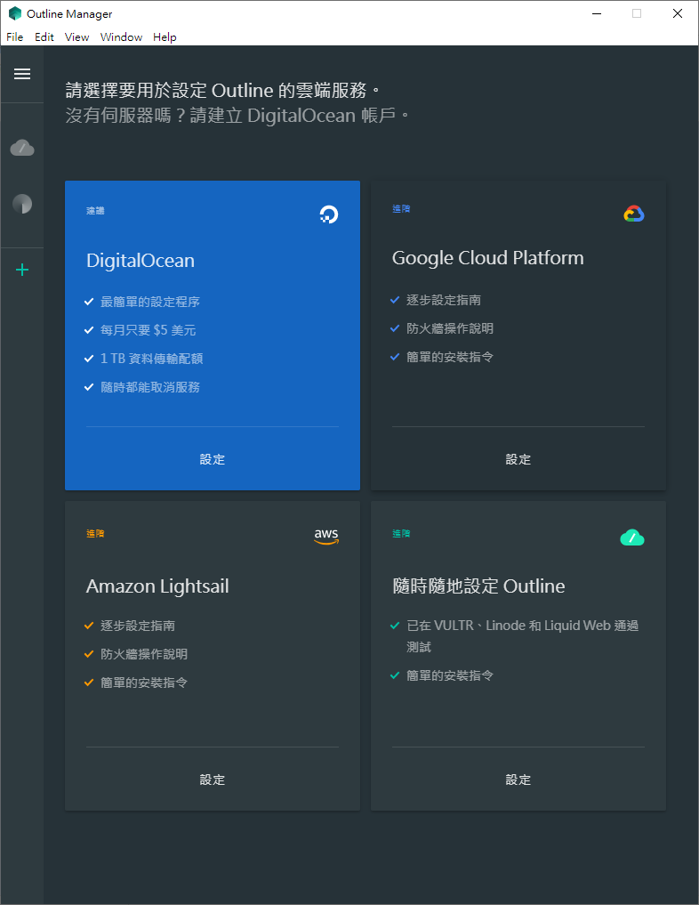在瀏覽器打開Google Cloud 網頁 https://cloud.google.com/，登入好你的Google帳號，點擊 前往主控台 或 免費試用 。
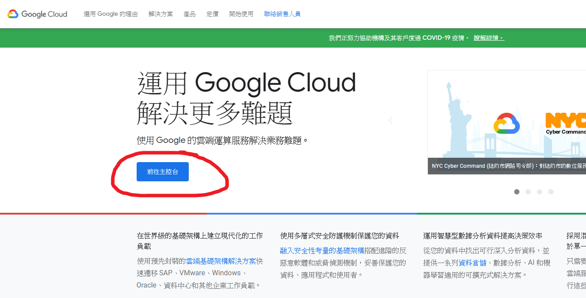Google Cloud 帳戶有$300美元試用額，試用期後不會自動收費。
填寫好資料後進入到主控台頁面。
點擊左上建立新專案，在 [Project name] (專案名稱) 欄位中為專案命名，按一下 [Create] (建立)。
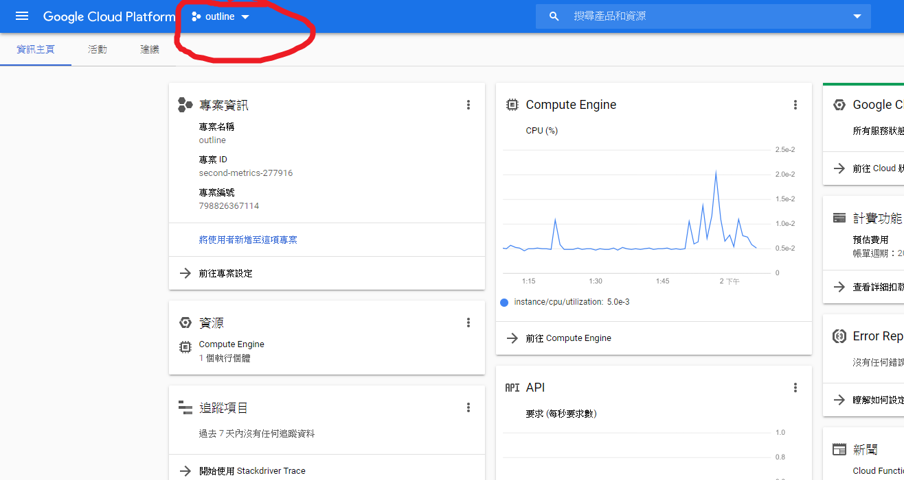 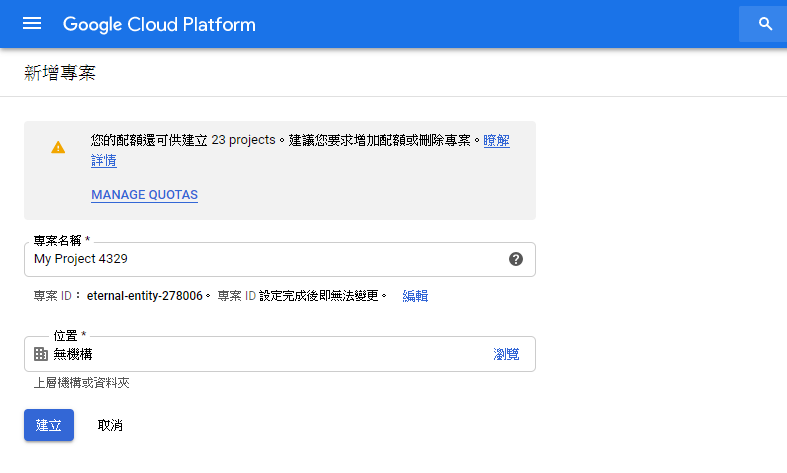
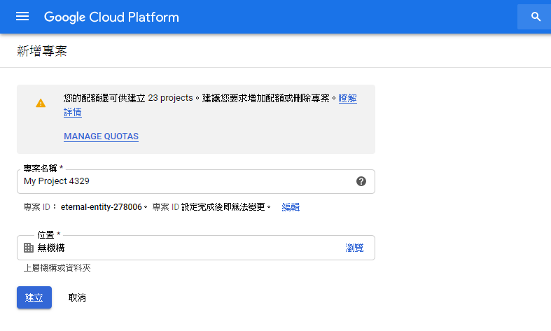
新增防火牆規則，在左邊欄 點選 網絡 -> VPC網絡 -> 防火牆規則 -> 建立防火牆規則。
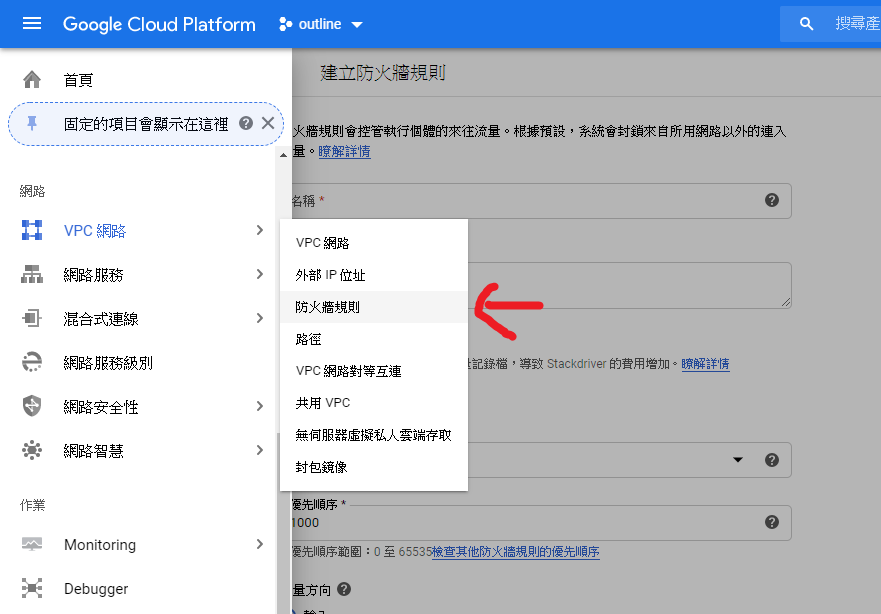 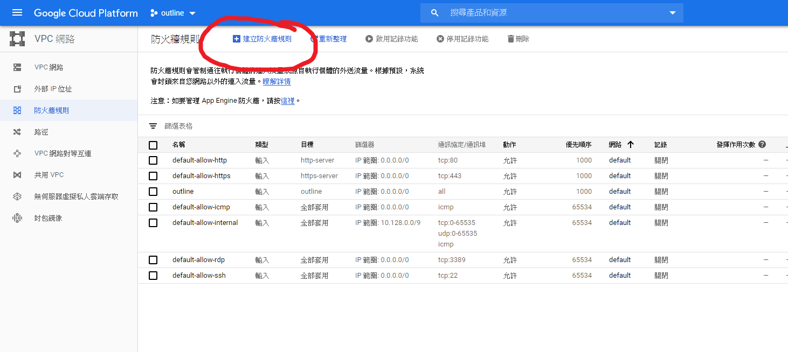在 [Name] (名稱) 欄位中輸入「outline」，在 [Target tags] (目標代碼) 欄位中輸入「outline」。
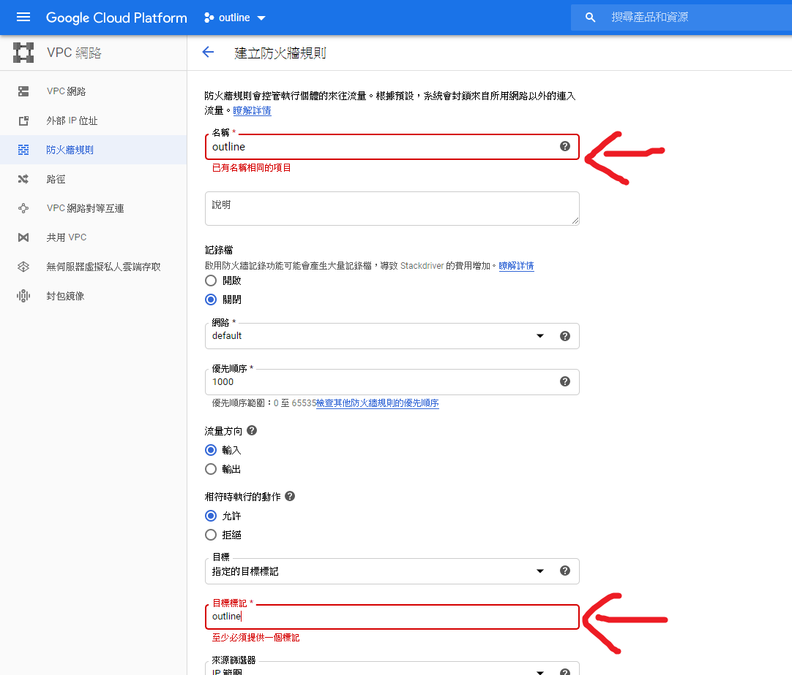在 [Source IP ranges] (來源 IP 範圍) 欄位中輸入「0.0.0.0/0」。
選取「Protocols and ports」(通訊協定和通訊埠) 下方的 [Allow all] (全部允許)。
按一下 [Create] (建立)。

建立新的 VM 執行個體，在左邊欄 點選 運算 -> Compute Engine -> VM執行個體。
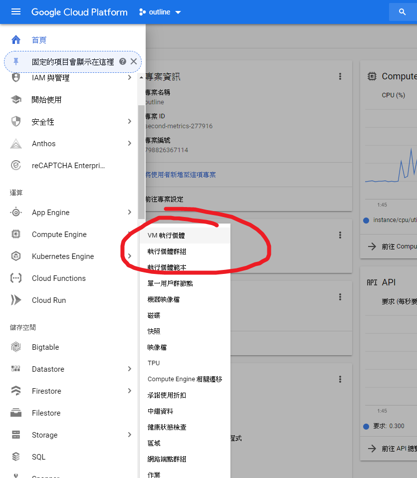 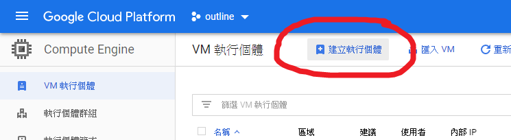在 [Name] (名稱) 欄位中輸入「outline-server」。 在「Region」(地區) 之下選取與伺服器使用者鄰近的地區。 在「Machine type」(機器類型) 按需要選取，一般選用[f1-micro]即可。 開機磁碟選用Ubuntu。
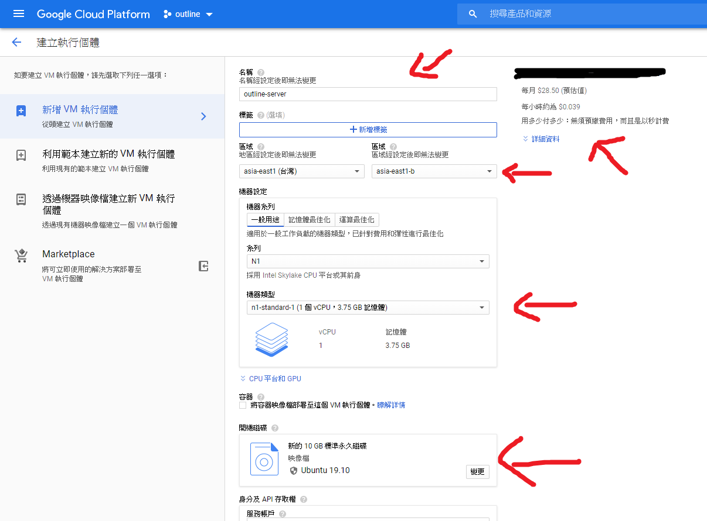身分及API存取權 選 允許所有Cloud API的完整存取權。
防火牆 剔 允許HTTP流量 和 允許HTTPS 流量。
依序按一下 [Management, security,
disks, networking, sole tenancy] (管理、安全性、磁碟、網路、單獨租用) 和 [Networking] (網路)， 在 [Network tags] (網路標記)
欄位中輸入「outline」。 按一下 [Create] (建立)。
按SHH 登入你的VM，然後輸入
sudo bash -c "$(wget -qO- https://raw.githubusercontent.com/Jigsaw-Code/outline-server/master/src/server_manager/install_scripts/install_server.sh)"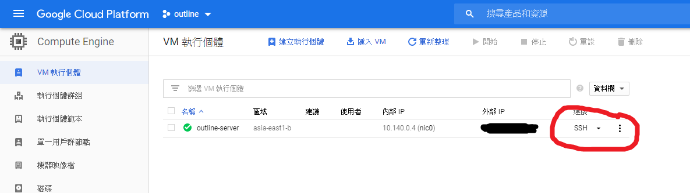 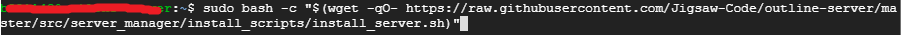
執行後將 API URL 貼到 Outline Manager。
 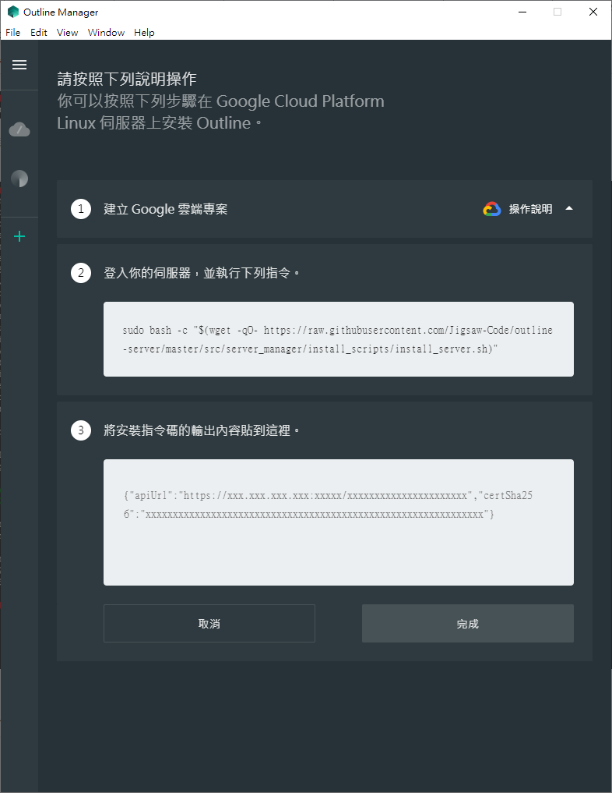
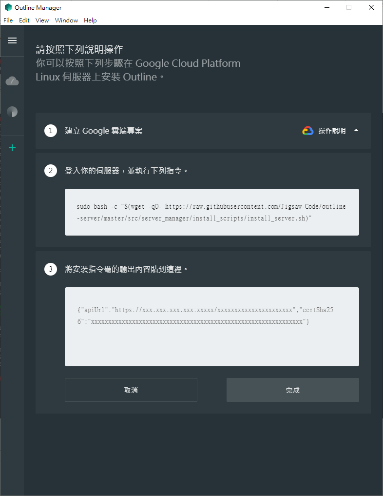
你可以新增金鑰並為金鑰取名，點擊分享存取權，複製你的存取金鑰。
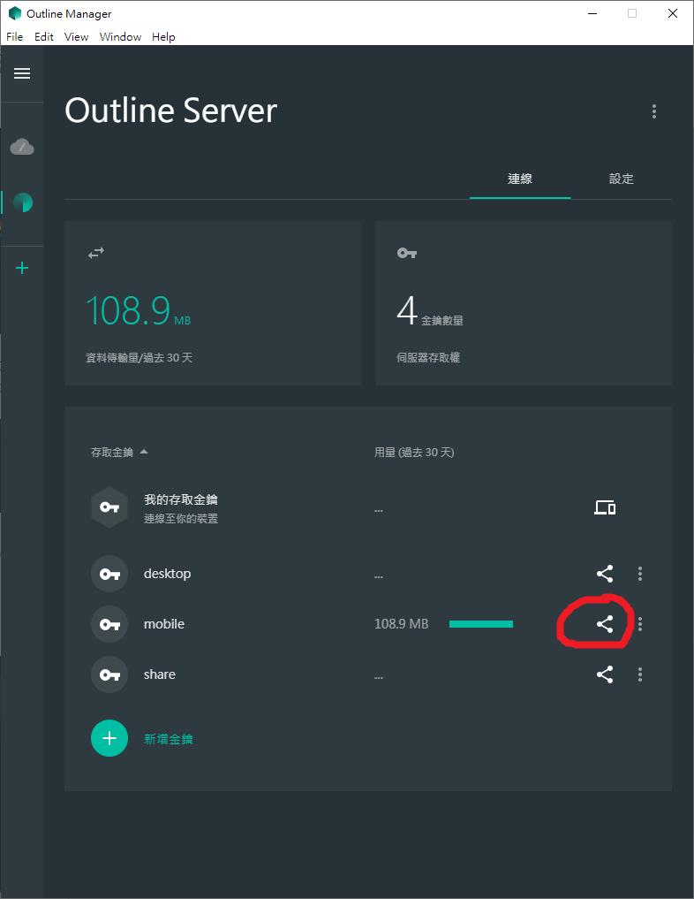
Outline Client 有 多平台版本包括 Android, iOS, macOS, Window 等，
打開你的Outline Client並將金鑰貼上後，按連接。
成功使用VPN。
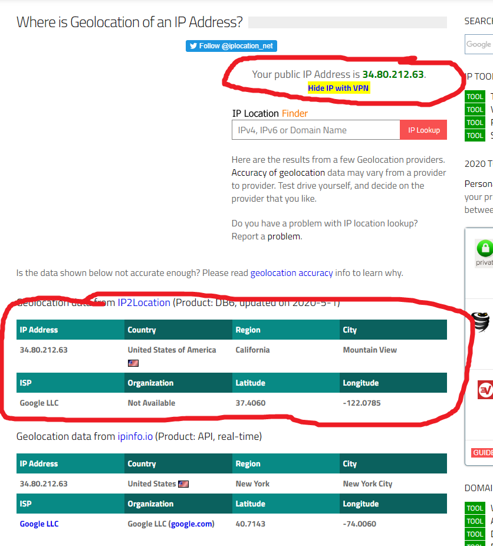3. Window Outline VPN 無法使用問題
Window 系統安裝時可能會出現以下問題。
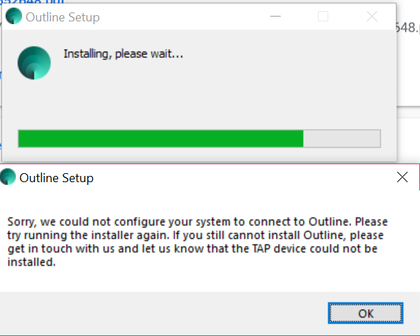解決方法: 安裝舊版本Outline。
打開https://github.com/Jigsaw-Code/outline-client/releases/tag/windows-v1.2.27
下載1.2.27 版本的Outline-Client.exe。
4. 如何轉換IP
Google VM 執行個體 會在啟動時隨機派發IP，停止VM 執行個體時會歸還IP。
其中一個轉換IP的方法是停止VM 執行個體後重新啟動。
PS. 重啟後需由 Step [按SHH 登入你的VM，然後輸入] 開始重新設定一次。